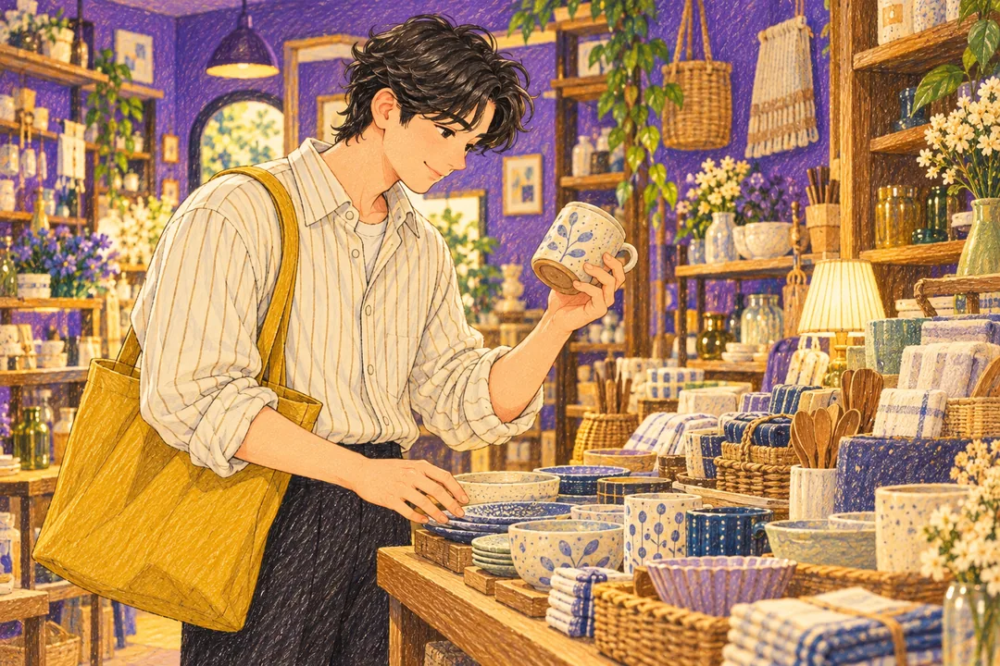

나의 결과는?
취향 수집형
무작정 많이보다 제대로 마음에 드는 것을 모으는 타입이런 타입이에요
당신은 소비에서도 취향의 결을 중요하게 생각합니다. 오래 두고 좋아할 수 있는 것, 내 취향에 맞는 것에 만족이 큽니다.
이런 순간, 나답죠
유행하는 물건인지보다 이미 가진 것과 어떻게 어울릴지 떠올려요. 디자인의 작은 차이를 비교하고 오래 찾아낸 물건에 애착이 생겨요.
- 취향이 분명함
- 만족도 높은 선택
- 오래 쓰는 물건에 강함
놓치기 쉬운 부분
희소하거나 취향에 맞는다는 이유만으로 실제 쓸 자리를 놓칠 수 있어요. 수집하는 즐거움과 보관할 공간도 함께 생각해보세요.
오늘 해볼 한 가지
구매 후보를 고를 때 둘 장소와 사용할 장면을 하나씩 떠올려보세요.
소비 키워드
취향안목오래 쓰기취향이 분명함만족도 높은
다른 타입과 나란히 보면
재미로 보는 성향 콘텐츠예요. 전문적인 심리 검사나 진단이 아니며, 타입 간 관계도 비교를 위한 이야기예요.
답변별 유형 점수를 더해 가장 높은 타입을 보여줘요. 동점이면 예산 설계형 → 기분 충전형 → 취향 수집형 → 절제 저축형 순서에서 앞선 타입이 표시돼요.
읽어봤다면, 친구와 비교해볼까요?
다음 테스트도 이어서 보기